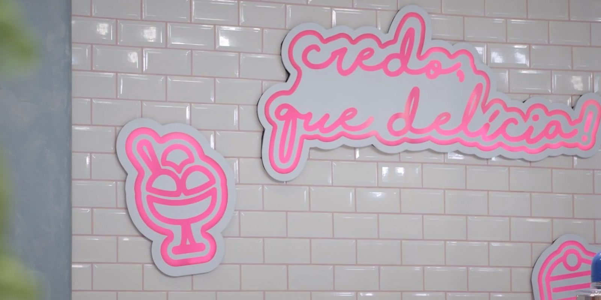

Case 22 · Design gráfico de cena · TV
Credo, que delícia! é um programa de confeitaria do GNT, de 2019, apresentado por Dani Noce. O nome é um letreiro cursivo em traço de néon, e o mesmo desenho aparece na parede de azulejos, nos ícones de sorvete e de bolo, no avental bordado e na vinheta.

01 · Abertura
O cold open passa pelo bolo, pela apresentadora, pelos participantes e pelas provas, e termina no logo sobre a casquinha de sorvete.
cqd_coldopen_v1, com som.02 · Cenário
Na parede de azulejo branco, o nome e os ícones ganham contorno cinza e traço rosa, como placas de néon recortadas. A taça de sorvete e a fatia de bolo usam o mesmo traço do letreiro, e o avental leva o nome bordado.
03 · Na tela
Nos créditos e nos títulos das provas, o cursivo dá lugar a letras condensadas em verde-limão e rosa: o nome da apresentadora e os Jogos Malucos.